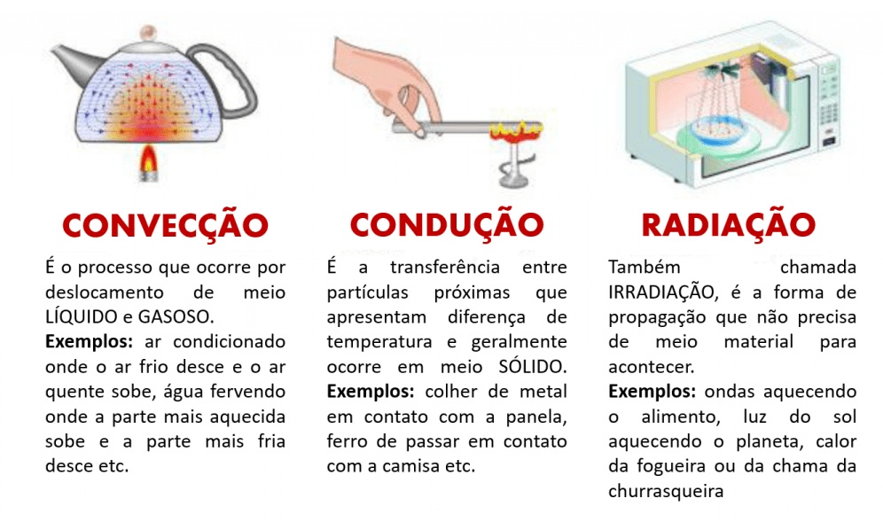
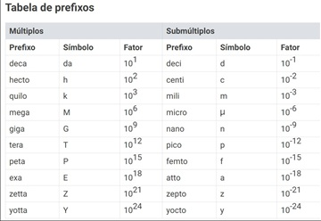
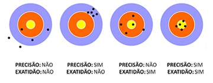

Fundamentos
Temperatura: indica o nível de agitação das partículas de um corpo.
Calor: energia transferida entre corpos devido à diferença de temperatura.
Exemplo: quando você encosta a mão em algo quente, o calor passa para sua mão.
Formas de transferência
- Condução: panela no fogão
- Convecção: ar quente subindo
- Irradiação: calor do sol

Créditos
Medidas
Medir é comparar com um padrão (metro, volt, grau Celsius).

Exatidão: quão perto do valor real.
Precisão: repetição consistente.

Créditos